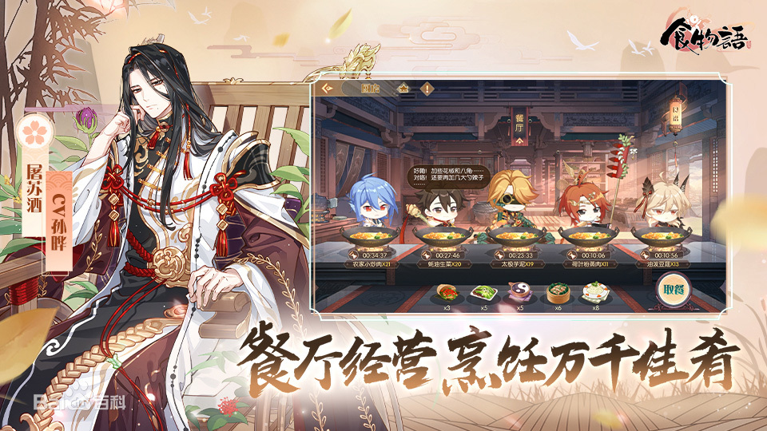
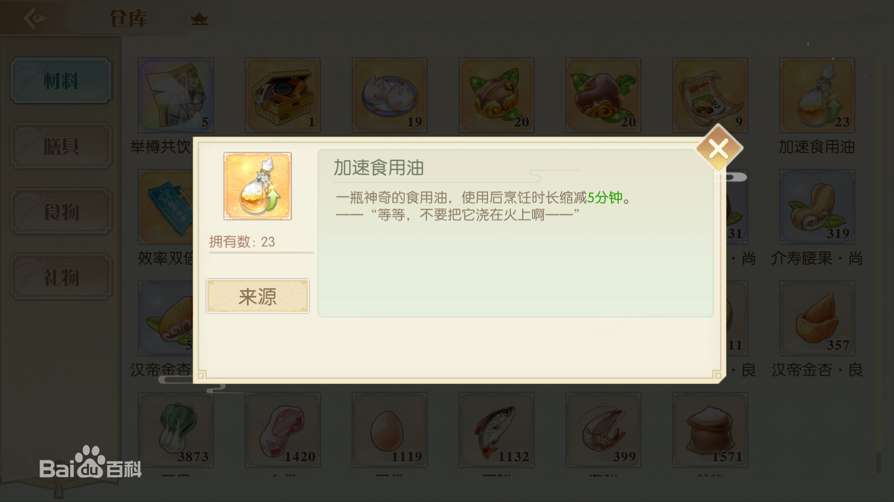
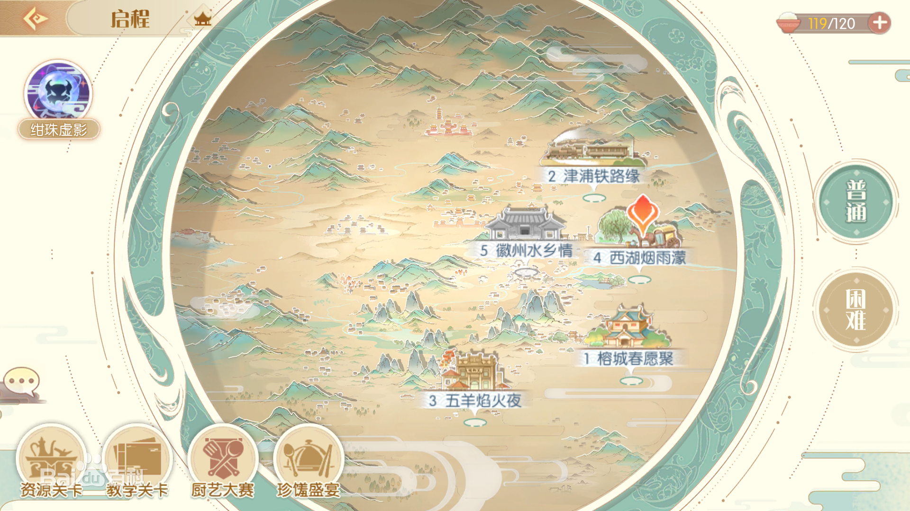

千古馔珍，魂牵空桑。星移万载，寄语承情。古来民以食为天，而今，中华珍馐尽化为灵，以食魂之躯弘扬神州文化。食魂逍遥鹤寿，传扬美食乃其终生使命；如若人间失传，自身也将消散殆尽。
食神伊挚与食魂一一结契，载名于神籍宝典《食物语》之中；更为其设庇佑之所“空桑”，日久年深，空桑已成三界中，享负盛名的美食福地也。《食物语》不仅为食魂契约神籍，更为中华美食历史，与烹制方式的集大成者。
如今，它已传承至食神后代玩家的手中。在食魂朝夕相伴中羽翼渐丰的玩家，如今已是独当一面的空桑少主。然而，世道变迁，今朝波谲云诡。食神仇雠酝酿着巨大的阴谋，夙昔恩怨逐渐浮上水面。肩负守护众食魂重任的玩家，开始踏上未知的旅途
当食魂生命降低至0、进入“虚弱”状态、濒临食魇化时，可以对食魂进行“净化”。在大部分战斗中，玩家拥有仅供净化食魂4次的元气。当玩家仍拥有净化机会时，食魂进入“虚弱”状态前，将向玩家求助。

若选择净化食魂，则该食魂累计恢复生命上限5%的生命值，并继续战斗；若选择放弃食魂，则该食魂生命完全将至0，并进入“虚弱”状态，失去战斗能力。 食魂评级是代表食魂该属性，可达上限的评价，评级从搞到低依次是SS、S、A、B、C。升级代表食魂能力等级，可通过出战护食用“兔兔包”，来获得拥有提升等级的食魂经验。
技能分为战斗技能和生活技能。战斗技能分为主动技能与被动技能，在战斗中被动技能自动释放，而主动技能需主动释放；生活技能在家园等非战斗类玩法中生效，为食魂带来各种附加效果。
食魂达到一定等级上限时，即可升星。食魂升星后，将提升等级上限，并获得大量的能力属性。若升星食魂拥有生活技能，则达到一定星级时，可提升生活技能等级。
食魂融合同名食魂或调料后，可以突破技能，即使指定技能等级提升1级。食魂突破后，可获得“焕新时装”，不同品质的食魂，获得时装所需的突破花瓣数量不同。
游戏里的装备称之为膳具，膳具分为箸勺、酒器、盛器3种类型，相同材料的3种类型膳具，将组成膳具套装。食魂装备膳具后，可增加相应属性，装备膳具套装，可激活相应膳具套装效果。不同膳具所提供的属性各有千秋，为食魂装备合适的膳具，才能发挥最大效用。

游戏里的货币有贝币和金玉2种，每种货币有着不同的用途及其获得方法。其中，金玉可通过充值、成就任务、日常任务等途径获得，玩家可消耗金玉，去购买体力、购买商城里的各种道具、增加副本次数等。
玩家可通过烹饪、日常任务、在线奖励等途径，来获得一些贝币。玩家消耗贝币，可以去提升食魂等级、强化膳具属性等。
游戏里的消耗品有兔兔包、加速食用油、效率双倍符等，这些消耗品可以帮助食魂增加经验值、缩减烹饪时间、获得双倍奖励等，它们可以在仓库内叠加存放使用，玩家一旦消耗各种消耗品后，就会扣减叠加数量。玩家可以通过商店购买、参加各种日常活动、完成各种日常任务等途径，来获得各种消耗品。
玩家每次进入游戏，初始状态都是处于主界面地图，主界面地图为安全区域，无法进行任何战斗力操作。主界面作为一个综合信息界面，玩家可从主界面，去查询自身的货币、食魂战力、食魂等级、膳具等信息内容，还能对食魂进行培养、强化膳具、交友聊天、加入协会等操作。
主界面里还有各种特殊地图的入口，玩家可以进入各种特殊地图，去体验更多日常任务或活动，来获得更多游戏道具奖励。玩家从各种特殊地图退出后，都会回到主界面地图。
游戏里的特殊地图有珍馐盛宴、厨艺大赛、兔来运转、金秋愿林、琳琅幻境等，这些特殊地图进入有等级、进入消耗体力、组队条件、进入次数、逗留时间等限制，部分特殊地图还会在规定的时间段内，才允许进入的。
玩家进入到这些特殊地图后，按照地图的任务要求，完成一些击杀怪物、击败敌对玩家、采集指定任务道具等类型的操作，就可以领取到对应的任务奖励。
《食物语》的优点有剧情可圈可点，全语音实装、战斗系统复杂，有一定创新性、多种玩法，养成休闲两不误；缺点有回合制战斗的通病，玩法略显单调、前期资源太少，难以专注同一角色、人物属性数值方面需要调整。
近几年来，女性向游戏是发展得越来越好了，但玩法都比较单一，《食物语》将策略战斗、收集养成、模拟经营等玩法融为一体，游戏体验非常多元化。好看的人设和动听的声音，能让玩家爱不释手。更难得的是，《食物语》以中华美食为背景，向我们弘扬了中华传统美食文化，真的十分有意义。
返回顶部更多内容可以 百度一下